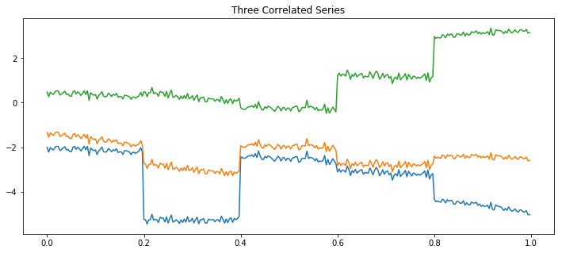
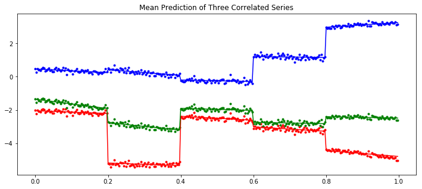

In [1]:
import numpy as np
import matplotlib.pyplot as plt
from scipy.linalg import cholesky
import pymc3 as pm
import theano
np.random.seed(42)
%matplotlib inline
Simulate the data:
In [2]:
D = 3
N = 300
sections = 5
period = N/sections
Sigma_a = np.random.randn(D, D)
Sigma_a = Sigma_a.T.dot(Sigma_a)
L_a = cholesky(Sigma_a, lower=True)
Sigma_b = np.random.randn(D, D)
Sigma_b = Sigma_b.T.dot(Sigma_b)
L_b = cholesky(Sigma_b, lower=True)
# Gaussian Random walk:
alpha = np.cumsum(L_a.dot(np.random.randn(D, sections)), axis=1).T
beta = np.cumsum(L_b.dot(np.random.randn(D, sections)), axis=1).T
sigma = 0.1
t = np.arange(N)[:, None]/ N
alpha = np.repeat(alpha, period, axis=0)
beta = np.repeat(beta, period, axis=0)
y = alpha + beta*t + sigma*np.random.randn(N, 1)
In [3]:
plt.figure(figsize=(12, 5))
plt.plot(t, y)
plt.title('Three Correlated Series')
plt.show()

In [4]:
class Scaler():
def __init__(self):
mean_ = None
std_ = None
def transform(self, x):
return (x - self.mean_) / self.std_
def fit_transform(self, x):
self.mean_ = x.mean(axis=0)
self.std_ = x.std(axis=0)
return self.transform(x)
def inverse_transform(self, x):
return x*self.std_ + self.mean_
In [5]:
def inference(t, y, sections, n_samples=100):
N, D = y.shape
# Standardies y and t
y_scaler = Scaler()
t_scaler = Scaler()
y = y_scaler.fit_transform(y)
t = t_scaler.fit_transform(t)
# Create a section index
t_section = np.repeat(np.arange(sections), N/sections)
# Create theano equivalent
t_t = theano.shared(np.repeat(t, D, axis=1))
y_t = theano.shared(y)
t_section_t = theano.shared(t_section)
with pm.Model() as model:
packed_L_α = pm.LKJCholeskyCov('packed_L_α', n=D,
eta=2., sd_dist=pm.HalfCauchy.dist(2.5))
L_α = pm.expand_packed_triangular(D, packed_L_α)
packed_L_β = pm.LKJCholeskyCov('packed_L_β', n=D,
eta=2., sd_dist=pm.HalfCauchy.dist(2.5))
L_β = pm.expand_packed_triangular(D, packed_L_β)
α = pm.MvGaussianRandomWalk('alpha', shape=(sections, D), chol=L_α)
β = pm.MvGaussianRandomWalk('beta', shape=(sections, D), chol=L_β)
alpha_r = α[t_section_t]
beta_r = β[t_section_t]
regression = alpha_r+beta_r*t_t
sd = pm.Uniform('sd', 0, 1)
likelihood = pm.Normal('y', mu=regression, sd=sd, observed=y_t)
trace = pm.sample(n_samples, njobs=4)
return trace, y_scaler, t_scaler, t_section
In [6]:
trace, y_scaler, t_scaler, t_section = inference(t, y, sections)
Auto-assigning NUTS sampler...
Initializing NUTS using jitter+adapt_diag...
99%|█████████▉| 594/600 [08:32<00:05, 1.16it/s]/home/jovyan/pymc3/pymc3/step_methods/hmc/nuts.py:429: UserWarning: Chain 1 contains only 100 samples.
% (self._chain_id, n))
/home/jovyan/pymc3/pymc3/step_methods/hmc/nuts.py:459: UserWarning: Chain 1 reached the maximum tree depth. Increase max_treedepth, increase target_accept or reparameterize.
'reparameterize.' % self._chain_id)
/home/jovyan/pymc3/pymc3/step_methods/hmc/nuts.py:451: UserWarning: The acceptance probability in chain 1 does not match the target. It is 0.536618056712, but should be close to 0.8. Try to increase the number of tuning steps.
% (self._chain_id, mean_accept, target_accept))
/home/jovyan/pymc3/pymc3/step_methods/hmc/nuts.py:467: UserWarning: Chain 1 contains 19 diverging samples after tuning. If increasing `target_accept` does not help try to reparameterize.
% (self._chain_id, n_diverging))
/home/jovyan/pymc3/pymc3/step_methods/hmc/nuts.py:429: UserWarning: Chain 2 contains only 100 samples.
% (self._chain_id, n))
/home/jovyan/pymc3/pymc3/step_methods/hmc/nuts.py:459: UserWarning: Chain 2 reached the maximum tree depth. Increase max_treedepth, increase target_accept or reparameterize.
'reparameterize.' % self._chain_id)
/home/jovyan/pymc3/pymc3/step_methods/hmc/nuts.py:451: UserWarning: The acceptance probability in chain 2 does not match the target. It is 0.691331874096, but should be close to 0.8. Try to increase the number of tuning steps.
% (self._chain_id, mean_accept, target_accept))
/home/jovyan/pymc3/pymc3/step_methods/hmc/nuts.py:467: UserWarning: Chain 2 contains 8 diverging samples after tuning. If increasing `target_accept` does not help try to reparameterize.
% (self._chain_id, n_diverging))
100%|██████████| 600/600 [08:38<00:00, 1.16it/s]/home/jovyan/pymc3/pymc3/step_methods/hmc/nuts.py:429: UserWarning: Chain 0 contains only 100 samples.
% (self._chain_id, n))
/home/jovyan/pymc3/pymc3/step_methods/hmc/nuts.py:459: UserWarning: Chain 0 reached the maximum tree depth. Increase max_treedepth, increase target_accept or reparameterize.
'reparameterize.' % self._chain_id)
/home/jovyan/pymc3/pymc3/step_methods/hmc/nuts.py:467: UserWarning: Chain 0 contains 5 diverging samples after tuning. If increasing `target_accept` does not help try to reparameterize.
% (self._chain_id, n_diverging))
/home/jovyan/pymc3/pymc3/step_methods/hmc/nuts.py:429: UserWarning: Chain 3 contains only 100 samples.
% (self._chain_id, n))
/home/jovyan/pymc3/pymc3/step_methods/hmc/nuts.py:459: UserWarning: Chain 3 reached the maximum tree depth. Increase max_treedepth, increase target_accept or reparameterize.
'reparameterize.' % self._chain_id)
/home/jovyan/pymc3/pymc3/step_methods/hmc/nuts.py:451: UserWarning: The acceptance probability in chain 3 does not match the target. It is 0.550616532328, but should be close to 0.8. Try to increase the number of tuning steps.
% (self._chain_id, mean_accept, target_accept))
/home/jovyan/pymc3/pymc3/step_methods/hmc/nuts.py:467: UserWarning: Chain 3 contains 18 diverging samples after tuning. If increasing `target_accept` does not help try to reparameterize.
% (self._chain_id, n_diverging))
Predict the mean expected y value.
In [7]:
a_mean = trace['alpha'][-1000:].mean(axis=0)
b_mean = trace['beta'][-1000:].mean(axis=0)
y_pred = y_scaler.inverse_transform(a_mean[t_section] + b_mean[t_section]*t_scaler.transform(t))
In [8]:
plt.figure(figsize=(12, 5))
plt.gca().set_prop_cycle('color', ['red', 'green', 'blue'])
plt.plot(t, y, '.')
plt.plot(t, y_pred)
plt.title('Mean Prediction of Three Correlated Series')
plt.show()
